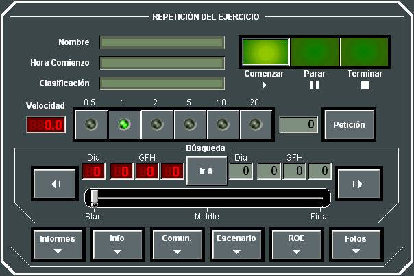

Reproducción de Ejercicios
Pulsando el botón Ejercicio de los Indicadores Generales de la Pantalla de Control, el Instructor puede acceder al siguiente diálogo para control de la Repetición del Ejercicio:

En esta ventana se muestra el Nombre, Hora de Comienzo y Clasificación del Ejercicio en Repetición, y desde ella el Instructor puede acceder a la siguiente funcionalidad:
- Comenzar, Parar y Terminar la Repetición del Ejercicio.
- Cambiar la Velocidad de Repetición del Ejercicio a uno de los valores preestablecido o a otro distinto.
- Ir A un instante determinado del Ejercicio, bien introduciendo manualmente el GFH del instante requerido, o bien actuando sobre la barra control de avance de la Repetición del Ejercicio.
- Botón Informes: Abre el diálogo de Generación de Informes.
- Botón Fotos: Abre el diálogo de Edición de Fotos.
Ver apartados correspondientes.